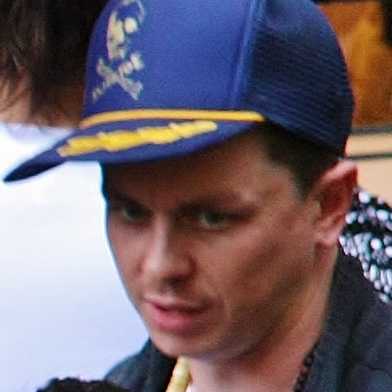
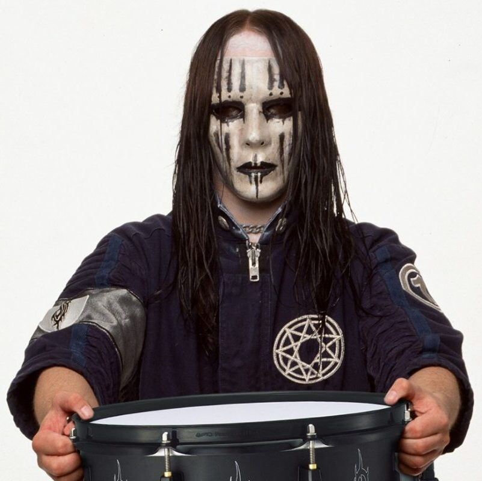
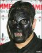
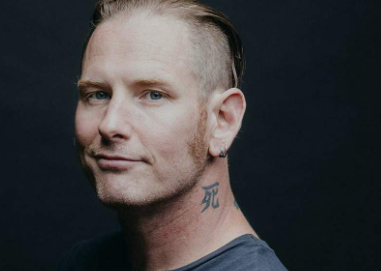
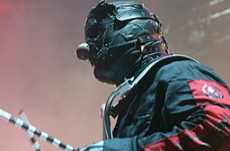
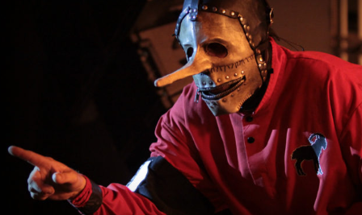
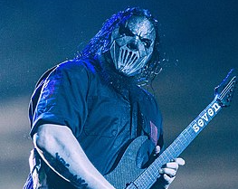

.png)
Участники
 Сид Уилсон (англ. Sid Wilson; род. 20 января 1977 года, Де-Мойн, Айова[1]) — американский музыкант, участник группы Slipknot и основатель своего сольного проекта DJ Starscream (транс. Диджей Старскри́м). Также известен как #0.Сид родился и вырос в Де-Мойне. Его родители родом из Англии. Сейчас выступает в группе Slipknot и своём сольном проекте DJ StarScream, псевдоним для которого позаимствовал из франшизы Трансформеры, фанатом которой является. В Slipknot он вносит скретчинг, звуковые эффекты, фоновые шумы. Во время назначения номеров для каждого участника группы Сид настаивал на том, чтобы быть #0Также известен тем, что совершал трюки на сцене в ранние годы Slipknot. Например, в 2008 году на одном из концертов Сид совершил прыжок на десять футов от сцены, в результате чего сломал обе пятки.
 Нейтан Джонас Джордисон (англ. Nathan Jonas Jordison, 26 апреля 1975 года, Де-Мойн, Айова, США — 26 июля 2021 года), более известный как Джои Джордисон (Joey Jordison) — американский барабанщик, наиболее известный в качестве участника и одного из основателей ню-метал группы Slipknot. Джои на протяжении 18 лет (1995—2013) был ключевым участником группы, однако в 2013 году он покинул коллектив. В 2010 году согласно опросу среди читателей британского журнала Rhythm возглавил список 100 лучших ударников за последние 2 года. В 2013 году основал сайд-проект Scar The Martyr. В списке 50 лучших барабанщиков рока по версии журнала Classic Rock занимает 13 место.13 июня 2016 года, на церемонии Metal Hammer Golden Gods в Лондоне, Джоуи Джордисон объяснил причину своего ухода из группы. Ею оказалась тяжёлая болезнь. Отбытие Джордисона из команды долгое время было скрыто завесой тайны: сам барабанщик и его бывшие соратники отказывались раскрывать подробности. Фронтмен группы Кори Тейлор объяснял это желанием «защитить» Джордисона, при этом открыто говорил, что с барабанщиком работать дальше было невозможно. «Я очень сильно заболел мерзкой болезнью под названием поперечный миелит. Я больше не мог играть. Это была форма рассеянного склероза, которого я бы не пожелал худшему врагу», — заявил Джордисон на Metal Hammer Golden Gods. Впоследствии Джордисон продолжил лечение, которое оказалось успешным.
 Пол Де́дрик Грей (англ. Paul Dedrick Gray; 8 апреля 1972, Лос-Анджелес, Калифорния, США — 24 мая 2010, Джонстон, Айова, США) — американский музыкант, получивший известность как бас-гитарист и один из основателей ню-метал группы Slipknot.Пол родился в Лос-Анджелесе, штат Калифорния, потом его семья переехала в Де-Мойн, штат Айова. В юности Пол играл в группах Anal Blast, Vexx, Body Pit, Inveigh Catharsi и HAIL!. Наряду с Шоном Крэханом и Андресом Колсефни он является одним из основателей Slipknot. Также он подменял басиста из группы Unida во время их тура в 2003 году, принимал участие в записи альбома группы Drop Dead, Gorgeous под названием Worse Than a Fairy Tale и совершил короткое турне с Reggie and the Full Effect. Также он участвовал в проекте Roadrunner United, играя на бас-гитаре в песнях «The Enemy» и «Baptized in the Redemption» из альбома The All-Star Sessions.
 Ко́ри Тодд Те́йлор (англ. Corey Todd Taylor; род. 8 декабря 1973, Де-Мойн, Айова) — американский певец, более известный как фронтмен и вокалист групп Slipknot и Stone Sour.Кори Тейлор начинал свою музыкальную карьеру с основания группы Stone Sour, которая на данный момент выпустила шесть студийных альбомов. В 1997 году присоединился к Slipknot в качестве вокалиста, с которым и было выпущено семь студийных альбомов. Также он сотрудничал с такими исполнителями, как Junk Beer Kidnap Band, Apocalyptica, Anthrax, Staind, Soulfly, Korn и многими другими.Кори Тейлор родился в городе Де-Мойн (Айова), 8 декабря 1973 Его отец имеет немецкое происхождение, а мать — ирландское. 5 лет жил в городе Уотерлу (Айова), в месте, которое он позднее описал как «огромную дыру, окруженную высокими зданиями». Большую часть детства Кори воспитывался своей матерью-одиночкой и бабушкой.В Де-Мойне Джои Джордисон, Шон Крейен и Мик Томсон пригласили Кори вступить в состав Slipknot. Он согласился поучаствовать в группе до конца тура, но закончилось все тем, что он стал их основным вокалистом. Из девяти членов Slipknot Кори был шестым, кто присоединился к группе.
 Майкл Шон Крейен (англ. Michael Shawn Crahan, род. 24 сентября 1969) — музыкант, более всего известный как перкуссионист группы Slipknot. Также в качестве барабанщика участвует в таких группах, как To My Surprise и Dirty Little Rabbits. Крейен помог основать Slipknot в 1995 году вместе с Полом Греем и Джоуи Джордисоном. По состоянию на 2022 год Крейен — единственный оставшийся член-основатель Slipknot.Шон Крейен — первый участник и один из основателей группы наряду с Полом Греем и Андерсом Колсефни и самый старший среди музыкантов в Slipknot. Шон имеет свой порядковый номер — 6. Также Шон носит маску клоуна во время выступлений группы. 18 мая 2019 года через соцсети Крейен объявил, что его младшая дочь Габриэль умерла в возрасте 22 лет.
 Кристофер Майкл «Крис» Фен (англ. Christopher Michael "Chris" Fehn; 24 февраля 1973) — американский музыкант, известный как бывший перкуссионист и бэк-вокалист группы Slipknot, а также как бас-гитарист Will Haven.Крис родился в Де-Мойне 24 февраля 1973 года. Известно, что до участия в группе он играл в качестве кикера в футбольной команде Уэйнского государственного университета. Фен присоединился к Slipknot в апреле 1997 года, заменив Брэндона Дарнера, как тот заменил в своё время другого перкуссиониста — Грэга Уэлтса. Брэндон отдал маску новому участнику, и Крис состоял в группе вплоть до 14 марта 2019 года. Уход был осуществлён после поданного им иска против своих коллег по группе по причине отсутствия надлежащей оплаты за групповую активность во время гастролей. Перкуссионист обвинил своих одногруппников в теневых доходах, о которых он не был осведомлён. После чего, 18 марта, в связи с окончанием судебных процессов, на официальном сайте группы было объявлено, что Крис больше не является участником группы Slipknot. 25 октября 2019 г. принял участие в качестве барабанщика вместе с Ди Снайдером из Twisted Sister на вокале и Миком Марсом из Mötley Crüe на гитаре в песне «These Old Boots» с сольного альбома экс-гитариста Motörhead Фила Кэмпбелла «Old Lions Still Roar».
 Мик Томсон (род. 3 ноября 1973 г.) — американский гитарист. Наиболее известен как гитарист метал группы Slipknot. До публичной музыкальной деятельности работал частным преподавателем по игре на гитаре.Он известен как «Номер Семь». У него есть татуировка в виде надписи «Seven» на левой руке, её можно увидеть в клипе «Dead Memories». Согласно интервью Шона, Томсон выбрал номер 7, так как считал его своим счастливым числом.В «Voliminal: Inside The Nine» Мик заявил, что страдает от боли в суставах и спине, из-за чего он некоторое время не мог ходить. 5 октября 2012 года он женился на своей давней подруге, Стейси Райли. 11 марта 2015 года сообщалось, что Мик и его младший брат Эндрю попали в больницу после пьяной ссоры, оба были госпитализированы с серьёзными ранениями, которые оказались не опасными для жизни.21 марта 2015 года Мику и Эндрю были предъявлены обвинения в хулиганстве, им был назначен суд в установленный срок, 30 марта 2015 года.